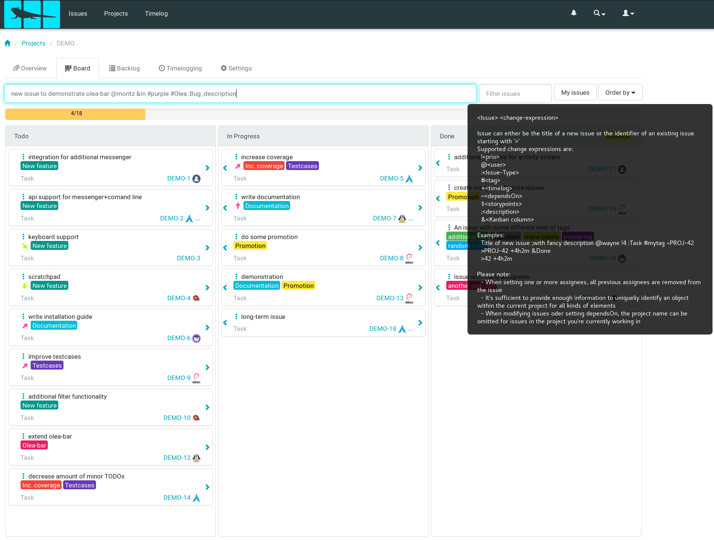
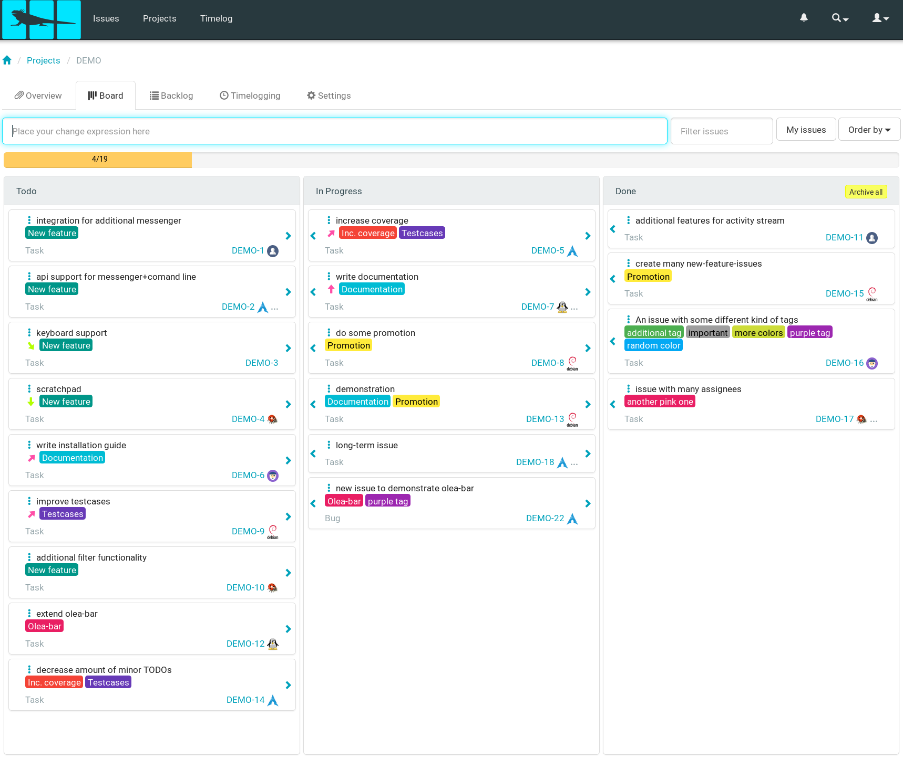

Iguana is an open source issue management system with a kanban board, sprint planning
and time logging features, and anything else you need to make working on a project in groups pleasant.
The Olea-Bar is a really mighty tool that can help you to be way more efficient than without. Whenever you don't know which token to use for a specific action just hover over the bar and a tooltip appears. Lazy people will love the matching. Whenever you enter something unique the bar assumes what you meant.
create issue
Here you can see many informations that have been entered into the bar:
Issue title of the new issue is new issue to demonstrate olea-bar
moritz gets assigned to it
It will be moved to the kanban column In Progress
Some tags are assigned purple tag and Olea-bar
The issue type is Bug
The description of this issue is description
In the state after the commit in fact are all of these information already stored in.


modify issue
Not only new issues can be filled with desired informations but also already existing ones that shall be modified.
Therefore all we have to prepend is > <issue number> in this case we want to modify issue with the number 3 - the keyboard support for which we assign cauca and move the issue to the kanban column In Progress.